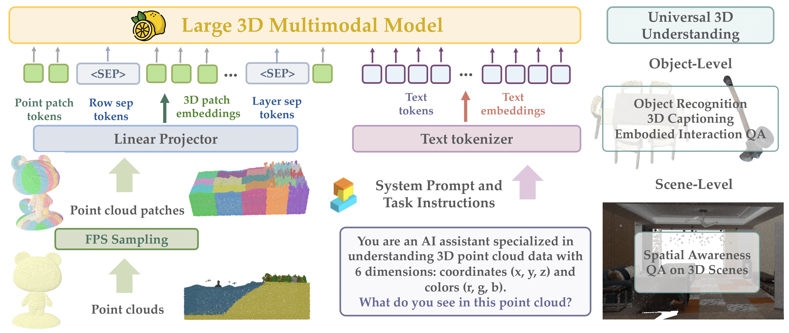
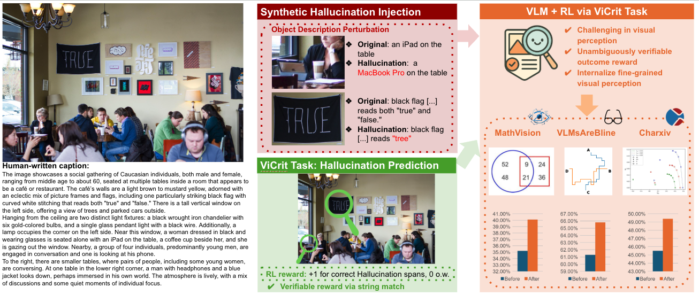

Yongyuan Cheryl Liang My research focuses on developing foundation models and intelligent agents.
I actively explore both theoretical frameworks and empirical findings, with specific research interests in:
Multi-Modal Foundation Models : Large multi-modal models/generative models for 2D/3D virtual and physical agentic tasks.Alignment : Post-training alignment including human preference alignment and cross-modality alignment.
In the previous few years, I have conducted research in Reinforcement Learning, Representations and Robustness.
I join UMD CS as a PhD student, advised by Prof. Furong Huang .
I received my B.S. degree in Mathematics from Sun Yat-sen University.
I'm always happy to collaborate with graduate/undergraduate students. Please drop me an email if you want to work with me.
part-time/full-time internship opportunities starting from Spring 2026 . Feel free to reach out if you're interested in my research.
News
Sept' 25
One paper to appear in NeurIPS 2025.
Feb' 25
Magma to appear in CVPR 2025. Code and models have been released.
Jan' 25
Two papers to appear in ICLR 2025.
Jan' 25
Start to update Awesome-Generalist-Agents .
Sept' 24
Make-An-Agent to appear in NeurIPS 2024.
June' 24
ACE has been selected as a long oral presentation in ICML 2024.
May' 24
Two papers to appear in ICML 2024.
Feb' 24
Awarded a Dean's Fellowship.
Jan' 24
Three papers to appear in ICLR 2024, including two spotlights and one poster.
Publications
By recency:
Show Selected Show All by Topics:
Foundation Model /
Alignment /
Reinforcement Learning /
Representations / Trustworthy AI .
* denotes Equal Contributions and Project Lead; † indicates Equal Advising.
Multi-Objective Alignment
Avocado: A Unified Contrastive Framework for Multi-Objective Alignment of Language Models
Yongyuan Liang* , Xuejun Zhang*, Ziqiao Ma*, Joyce Chai, Furong Huang
arXiv , 2025
Project Page /
Paper /
Code /
Models & Datasets /
Twitter

3D Large Multi-Modal Model
LEMON: A Unified and Scalable 3D Multimodal Model for Universal Spatial Understanding
Yongyuan Liang , Xiyao Wang, Yuanchen Ju, Jianwei Yang, Furong Huang
arXiv , 2025Spotlight Talks CVPR Workshop CVinW , 2025
Project Page /
Paper /
Code /
Models & Datasets /
Twitter
Agentic Large Multi-Modal Model
Magma: A Foundation Model for Multimodal AI Agents
CVPR Project Page /
Paper /
Code /
Models & Datasets /
Twitter
Embodied Large Multi-Modal Model
TraceVLA: Visual Trace Prompting Enhances Spatial-Temporal Awareness for Generalist Robotic Policies
Yongyuan Liang* , Shuaiyi Huang, Jianfeng Gao, Hal Daumé III, Andrey Kolobov, Furong Huang, Jianwei Yang
ICLR Oral Talks ICLR Workshop GenBot , 2025
Project Page /
Paper /
Code /
Models /
Twitter
Generative Model
Make-An-Agent: A Generalizable Policy Network Generator with Behavior-Prompted Diffusion
Yongyuan Liang , Tingqiang Xu, Kaizhe Hu, Guangqi Jiang, Furong Huang, Huazhe Xu
NeurIPS Oral Talks NeurIPS Workshop AFM , 2024
Project Page /
Paper /
Code /
Models & Dataset /
Twitter

ViCrit: A Verifiable Reinforcement Learning Proxy Task for Visual Perception in VLMs
Yongyuan Liang , Yuhang Zhou, Xiaoyu Liu, Ziyi Zang, Ming Li, Chung-Ching Lin, Kevin Lin, Linjie Li†, Furong Huang†, Lijuan Wang†
NeurIPS Project Page /
Paper /
Code /
Models & Datasets /
Twitter
Robots Pre-Train Robots: Manipulation-Centric Robotic Representation from Large-Scale Robot Datasets
Yongyuan Liang †, Huazhe Xu†
ICLR Project Page /
Paper /
Code /
Models /
Twitter
PREMIER-TACO is a Few-Shot Policy Learner: Pretraining Multitask Representation via Temporal Action-Driven Contrastive Loss
Yongyuan Liang , Xiyao Wang, Shuang Ma, Hal Daumé III, Huazhe Xu, John Langford, Praveen Palanisamy, Kalyan Basu, Furong Huang
ICML Project Page /
Paper /
Code /
Twitter
Reinforcement Learning
ACE: Off-Policy Actor-Critic with Causality-Aware Entropy Regularization
Yongyuan Liang* , Yan Zeng, Yu Luo, Guowei Xu, Jiawei Guo, Ruijie Zheng, Furong Huang, Fuchun Sun, Huazhe Xu
ICML (Oral - Top 1.5%) Project Page /
Paper /
Code /
Twitter
DrM: Mastering Visual Reinforcement Learning through Dormant Ratio Minimization
Yongyuan Liang* ,
Xiyao Wang, Zhecheng Yuan, Tianying Ji, Yu Luo, Xiaoyu Liu, Jiaxin Yuan, Pu Hua, Shuzhen Li, Yanjie Ze, Hal Daumé III, Furong Huang, Huazhe Xu
ICLR (Spotlight - Top 5%) Project Page /
Paper /
Code /
Twitter
Efficient Adversarial Training without Attacking: Worst-Case-Aware Robust Reinforcement Learning
Yongyuan Liang* , Yanchao Sun*, Ruijie Zheng, Furong Huang
NeurIPS Spotlight Talks NeurIPS Workshop SafeRL , 2021
Paper /
Code /
Slides
Game-Theoretic Robust Reinforcement Learning Handles Temporally-Coupled Perturbations
Yongyuan Liang , Yanchao Sun, Ruijie Zheng, Xiangyu Liu, Benjamin Eysenbach, Tuomas Sandholm, Furong Huang, Stephen Marcus McAleer
ICLR Paper /
Twitter
Is poisoning a real threat to LLM alignment? Maybe more so than you think
Yongyuan Liang , Furong Huang
AAAI ICML Workshop on Models of Human Feedback for AI Alignment , 2024
Paper /
Code
Beyond Worst-case Attacks: Robust RL with Adaptive Defense via Non-dominated Policies
Yongyuan Liang , Furong Huang
ICLR (Spotlight - Top 5%) Project Page /
Paper /
Code /
Twitter
Who Is the Strongest Enemy? Towards Optimal and Efficient Evasion Attacks in Deep RL
Yongyuan Liang , Furong Huang
ICLR Best Paper Award NeurIPS Workshop SafeRL , 2021
Project Page /
Paper /
Code
Certifiably Robust Policy Learning against Adversarial Communication in Multi-agent Systems
Yongyuan Liang , Soheil Feizi, Sumitra Ganesh, Furong Huang
ICLR Paper /
Code
Professional Service
Conference Program Committee: ICML(2022, 2023, 2024, 2025), NeurIPS(2021, 2022, 2023, 2024, 2025), ICLR(2021, 2022, 2023, 2024, 2025)
Workshop Program Committee: FMDM at NeurIPS 2023 , Bi-Align at ICLR 2025 , CVinW at CVPR 2025
Misc
If my name is a bit tricky to pronounce for you, it is also great to call me Cheryl [Àà Éerəl].
I've been playing the violinüéª for over 15 years and served as a principal violinist in the university orchestra.
I used to play the piano as a classical music enthusiast and held ABRSM Grade 8 Piano certification.
Been a fan of Novak Djokovic since 2012.
My Erdős number = 4 .